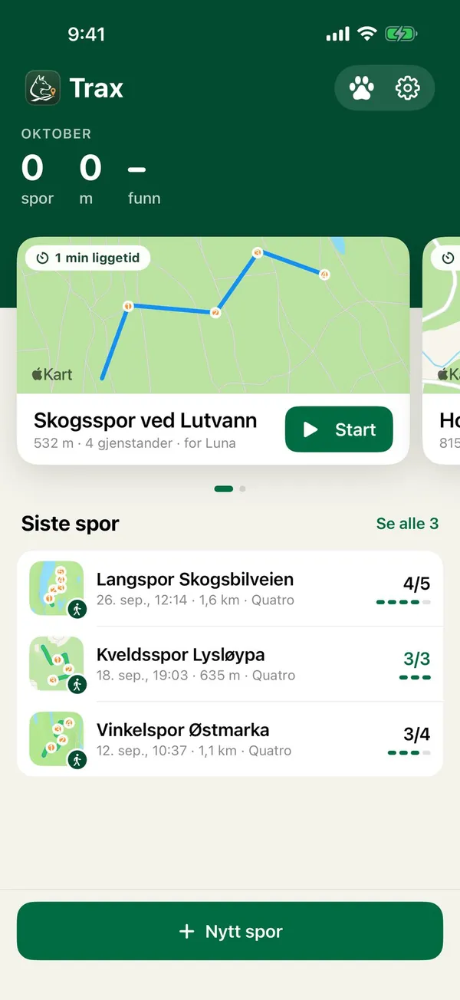
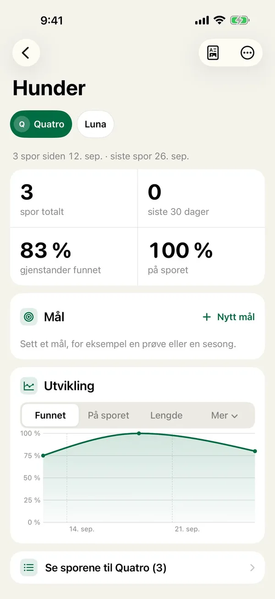
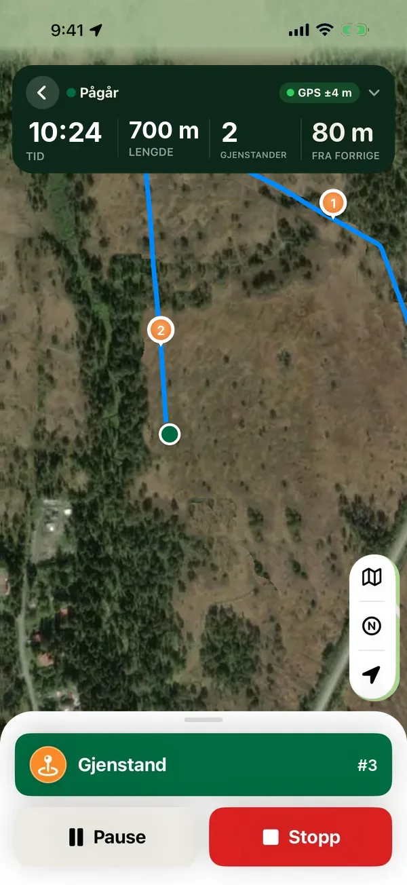
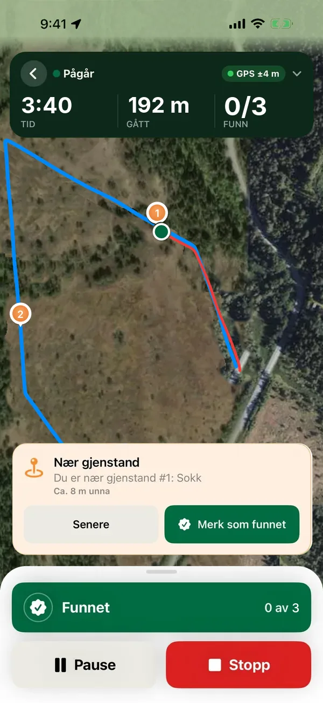
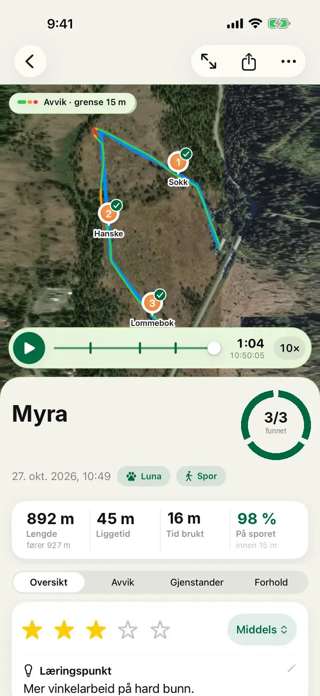
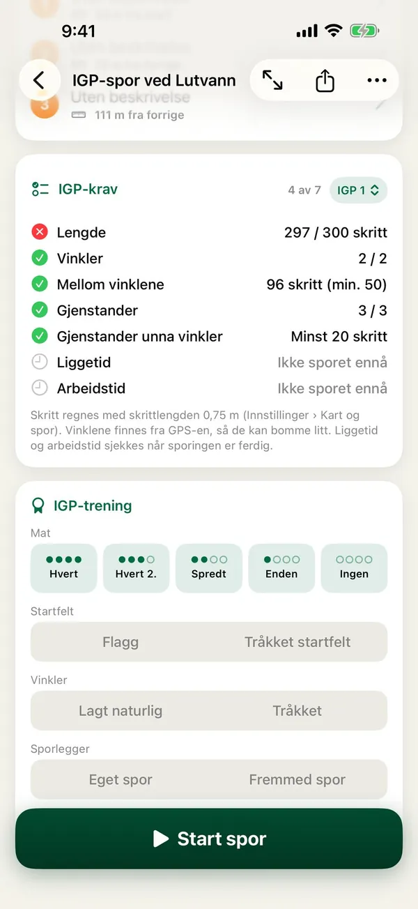
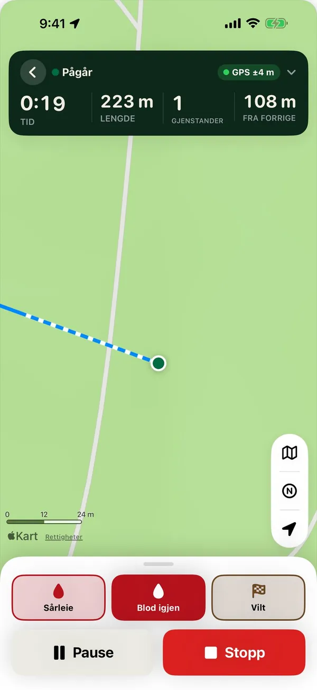
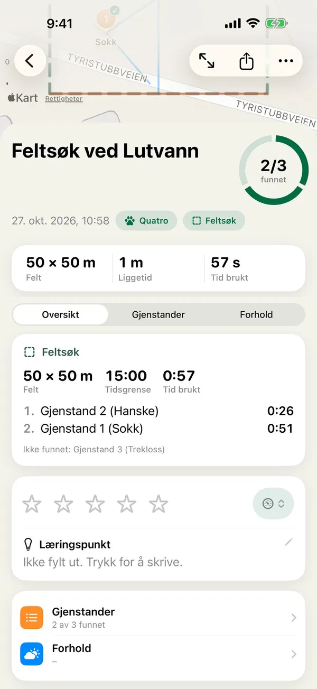
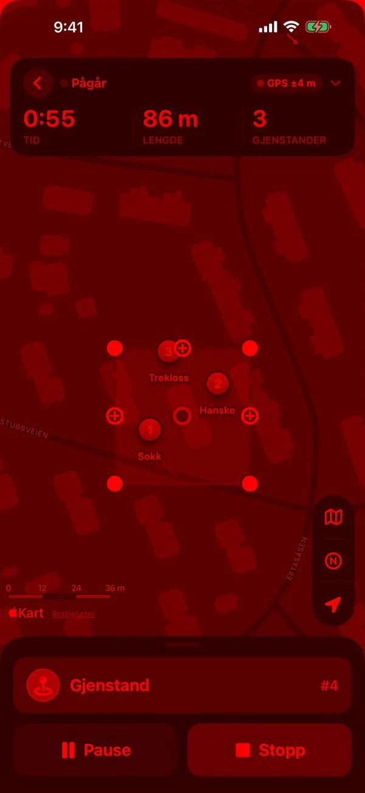

iPhone
Sporplaner
Planlegg treningsdagen hjemme. Tegn sporene på kartet, samle dem i en gruppe og se med én gang om noen krysser.

Trax registrerer sporet mens du legger det, sier fra når hunden nærmer seg gjenstandene, og viser etterpå hvor godt hunden holdt sporet.


149 kr, én gang. Ingen abonnement, ingen konto, ingen reklame.



Slik fungerer det
Tegn strekninger og gjenstander på kartet hjemme, og send planen til sporleggeren.
Trykk «Gjenstand» der du legger noe. Trax registrerer ruten med GPS, teller liggetiden og varsler når sporet er klart.

Ha telefonen i lomma. Du hører det når dere nærmer dere en gjenstand, og telefonen vibrerer hvis dere kommer bort fra sporet.

Spill av sporet, se avviket langs ruten og hvor mange gjenstander hunden fant. Over tid ser du utviklingen for hver hund.

Funksjoner
Spor, IGP-spor, blodspor, feltsøk og arealsøk i samme app.
Planlegg treningsdagen hjemme. Tegn sporene på kartet, samle dem i en gruppe og se med én gang om noen krysser.
Avspilling, avvik, gjenstander og forhold på ett sted.
Nivå fra IGP-V til FH 3, mal på kartet og skritt mot kravet.

Sårleie, blod igjen, vilt og fluktretning.

Tegn feltet, sett en tidsgrense og se tiden for hvert funn.

Nøkkeltall, mål, treningsmomenter og utviklingen for hver hund.
Rødt lys på skjermen når du trener i mørket.

Laget av en som trener spor selv
«Jeg trener hund nesten hver dag, og spor er noe av det morsomste jeg gjør.»
Trax laget jeg fordi jeg ville ha en enkel app som gjør akkurat det sporarbeidet trenger. Jeg bruker den selv når jeg trener spor med hunden min, og jobber hele tiden med å forbedre appen slik at den dekker alle behov. Jeg svarer på alle henvendelser selv.

Pris
149kr
Jeg svarer på alle henvendelser selv, vanligvis innen to virkedager.